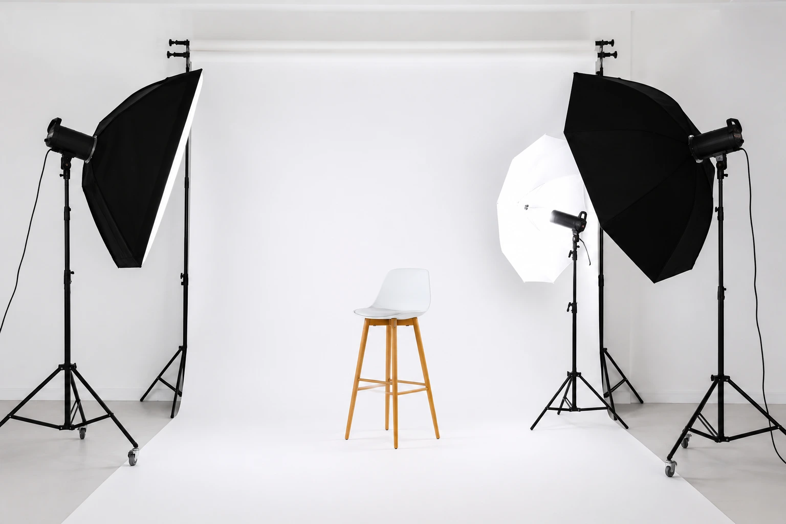
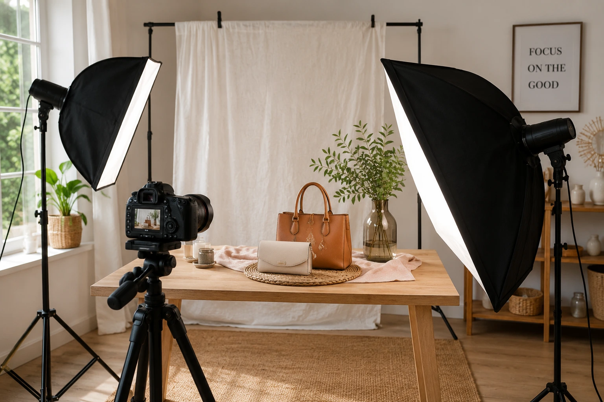

The Ultimate E-commerce Checklist: Driving Traffic with Professional Product Catalog Shoots
Introduction
Every Indian e-commerce brand faces the same brutal reality: shoppers cannot touch, feel, or try your product before buying. The only thing standing between a scroll and a sale is your product photography. Whether you are selling on Shopify, Amazon, Flipkart, or your own website, the quality and strategic execution of your product visuals directly determine your conversion rate, your return rate, and your long-term brand reputation.
This is the ultimate checklist for Indian e-commerce sellers who want to use professional product catalog shoots to drive traffic, improve rankings, and close more sales — from white background basics to 360-degree product photography, from clothing catalog shoots to platform-specific technical requirements.
Why Product Photography Is an E-commerce Growth Strategy
E-commerce product photography is not a box to tick before launch — it is an active growth lever that affects every stage of the customer journey. Poor product images increase return rates because customers receive a product that does not match their expectation from the photos. Strong product images reduce returns, increase add-to-cart rates, and improve repeat purchase rates.
On competitive platforms like Amazon and Flipkart, where multiple sellers may offer the same product, the brand with the strongest imagery consistently wins the click — even at a higher price. For brands running paid advertising, website visual production quality determines ad performance. Meta and Google Shopping pull product images directly from your catalogue — a low-quality image tanks click-through rate before a single rupee of ad spend has a chance to work.
PRE-SHOOT CHECKLIST
✅ 1. Define Your Platform Requirements Before Briefing the Photographer
Different platforms have different mandatory technical requirements. Confirm these before the shoot so your photographer can frame and format accordingly. Amazon and Flipkart model photoshoot guidelines require the main product image to have a pure white background (RGB 255,255,255), the product must fill at least 85% of the frame, and no text, logos, or watermarks are permitted on the main image. Know your platform's rules before you shoot — not after.
Shopify photography has more flexibility but still benefits from square (1:1) or landscape (4:3) aspect ratios for product grids, and consistently sized images across a collection. Check your Shopify theme settings before briefing your photographer.
✅ 2. Decide Your Shot List by Product Category
A catalog shoot for clothing brands needs different shots from a home goods brand or electronics brand. Define your shot list in advance for every SKU:
- Clothing: front hero, back, detail shots (fabric, stitching, print), flat lay, and model shots showing fit and drape
- Electronics: front, back, side profile, ports and connections, packaging, and in-use lifestyle shot
- Beauty and personal care: hero shot, open variant, texture close-up, and lifestyle flat lay
- Home goods: isolated product shot, scale reference, and styled lifestyle shot
✅ 3. Prepare Your Products Before Shoot Day
Nothing wastes shoot time and budget like unprepared products. For every SKU: confirm no visible defects or damage, packaging is intact and print is clear, fabric is steamed or ironed, hardware is polished and fingerprint-free, and any assembly required is complete and ready to photograph in both assembled and in-box states.
✅ 4. Brief Your Photographer on Your Brand Visual Language
Provide a visual brief including reference images, your brand colour palette, prop and background preferences, and the tone you want to communicate — minimal and premium, warm and approachable, bold and high-energy. Your photographer needs to understand the brand, not just the product.

DURING THE SHOOT CHECKLIST
✅ 5. White Background Product Photography: Technical Non-Negotiables
White background product photography for Shopify, Amazon, and Flipkart is the most common requirement in e-commerce — and the most frequently done incorrectly. A true white background requires either a seamless white sweep correctly lit to eliminate shadow and gradient, or a clipped white achieved in post-production by a skilled retoucher. Common mistakes to avoid:
- Underlit background creates grey or gradient instead of pure white
- Hard shadows from the product falling on the background break the clean look
- Reflective products (glass, chrome, glossy packaging) require specialist lighting rigs to prevent hot spots
- Soft products like fabric need mannequins, invisible mannequins, or model shoots to communicate fit
✅ 6. Lifestyle and Contextual Shots for Brand Storytelling
Beyond the white background, strong website visual production includes lifestyle imagery that shows the product in use and in context. Plan at least two to three lifestyle setups per product category — not per SKU. These setups generate 10 to 20 usable images across your catalogue without requiring a separate lifestyle production for every product.
✅ 7. 360-Degree Product Photography for Websites
360-degree product photography for websites is no longer a premium-only feature. For products where dimensions, shape, and all-round detail are critical to the purchase decision — furniture, footwear, electronics, watches, jewellery, bags — a 360-degree spin viewer significantly increases conversion and reduces return rates.
A 360-degree shoot captures the product on a turntable at consistent intervals (typically 24 or 36 frames) and delivers a spin viewer-ready image set that can be embedded directly on your Shopify or website product page. Confirm deliverables include both the raw frames and the optimised spin file compatible with your platform.
✅ 8. Model Shots for Apparel and Lifestyle Categories
For clothing, accessories, and footwear, model photography is non-negotiable. An Amazon and Flipkart model photoshoot for apparel requires the product — not the model — to be the focal point, with natural and neutral expressions and images showing the product from every relevant angle.
For a catalog shoot for clothing brands covering a full seasonal collection, map outfit changes in advance, brief styling consistently, and plan your shoot order to maximise the number of looks captured per day.
POST-SHOOT CHECKLIST
✅ 9. Post-Production Standards for E-commerce Images
Every image delivered for platform listing should have:
- Background retouched to pure white for marketplace listings
- Colour correction matched accurately to the actual product colour
- Exposure and contrast balanced consistently across all images in a collection
- Dust, fingerprint, and defect retouching completed
- Consistent crop and canvas size across all SKUs in a collection
✅ 10. Optimising Website Images for SEO and Speed
Optimising website images for SEO and speed is one of the most commonly missed steps in e-commerce production — and one of the most impactful for organic traffic. Images that are not optimised slow page load times, which directly affects Google search rankings and user experience scores. The checklist before uploading to your platform:
File Format
Export as WebP for web — 50 to 80% smaller than JPEG with no visible quality loss. Use JPEG as fallback where WebP is not supported.
File Size
Product images should target under 150KB per image. Hero images under 300KB. Large file sizes are the most common cause of slow e-commerce page loads.
File Naming
Name files descriptively before upload. blue-cotton-kurta-women-medium.webp ranks
better than IMG_4521.jpg.
Image Dimensions
Upload images at the exact display dimensions your theme uses, or at 2x for retina. Uploading 4000px images displayed at 800px wastes bandwidth.
✅ 11. Image Alt Text Strategy for Product SEO
Alt text is a direct SEO signal. For Shopify photography and e-commerce platforms, every product image alt tag should include: the product name, the primary descriptive keyword, the variant (colour, size, material), and the view (front, back, detail, lifestyle).
A Shopify store with 200 products and five images per product has 1,000 alt text opportunities. Brands that complete this correctly see measurable improvements in Google Image Search traffic and product page indexing depth.

✅ 12. Choosing the Best Product Photographers for Your Business
Best product photographers for small business e-commerce are not the most expensive — they are the photographers who understand platform requirements, deliver to specification, and can work efficiently across a large number of SKUs without quality variation. When evaluating a production team, confirm:
- Do they have specific e-commerce catalog experience — not just portrait or event photography?
- Can they show a portfolio of white background, lifestyle, and model shots?
- Do they understand Amazon, Flipkart, and Shopify platform requirements?
- Do they handle post-production retouching in-house?
- What is their turnaround time for a full catalog, and do they deliver images named and sized to platform specifications?
Platform-Specific Image Specifications: Quick Reference
| Platform | Main Image | Secondary Images | Recommended Size |
|---|---|---|---|
| Amazon | Pure white BG, product fills 85%+ | Lifestyle, model, detail allowed | 2000 × 2000px min |
| Flipkart | White/light BG, no watermarks | Lifestyle and infographic allowed | 1000 × 1000px min |
| Shopify | Flexible — match your theme ratio | Lifestyle, 360°, detail shots | 2048 × 2048px recommended |
| Website | Theme-dependent | Hero, lifestyle, banner | Varies — optimise by breakpoint |
Conclusion
A professional product catalog shoot is not a one-time production event — it is the visual infrastructure of your e-commerce business. A correctly executed catalog, optimised with correct alt text, WebP images, and platform-specific formatting, outperforms a folder of unoptimised smartphone photos on every metric that matters: traffic, conversion, and return rate.
The brands winning on Amazon, Flipkart, and Shopify are not posting more — they are posting better. Every checkpoint in this guide is a step toward a product catalogue that works as hard as you do.
At The PhD Ads, we specialise in e-commerce product photography, full catalog shoots, model photoshoots for Amazon and Flipkart, and complete website visual production — from concept to platform-ready delivery.
Key Topics
Ready to Build Your E-commerce Product Catalogue?
At The PhD Ads, we deliver platform-ready e-commerce product photography — white background shoots, lifestyle sets, model shoots for Amazon and Flipkart, and 360-degree catalog production for Shopify and direct-to-consumer websites.
Email: team@e2o.in